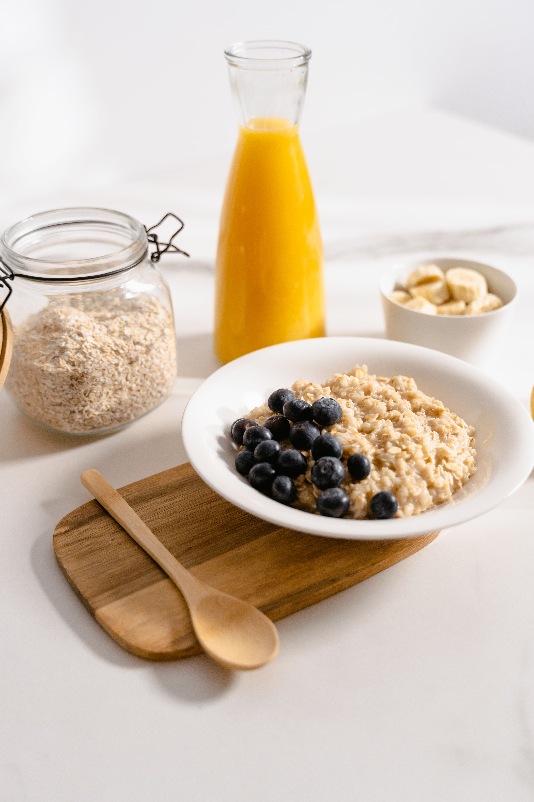

Oatmeal

Image Credit: Mart Production
Ingredients
- 0.5 cup Oats
- 1 cup Milk
- 2 tbsp Maple Syrup
- 1 tsp Cinnamon
- .25 tsp Salt
Steps
- Pour milk and salt into a pot and stir.
- Bring milk to a boil over medium heat.
- Add oats to pot and stir.
- Let boil for 4 minutes.
- Add maple syrup and cinnamon to pot and stir.
- Boil for 1 minute longer.
- Let cool and enjoy!
Home